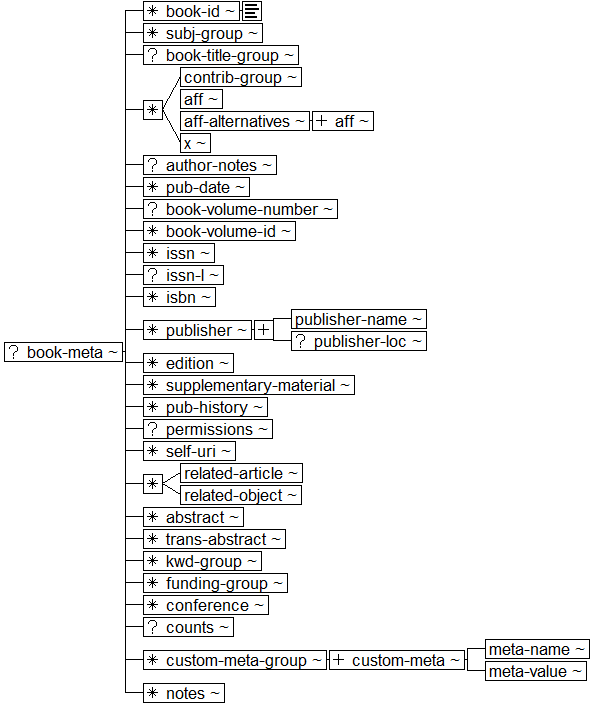

Book Interchange Tag Suite (BITS) Version 1.0 Tag Library Version 1.0
Digital Archive of Journal Articles
National Center for Biotechnology Information (NCBI)
National Library of Medicine (NLM)
Book Metadata (Whole Book)
structure diagram

Subsidiary sections:
Subject Group structure diagram
Book Title Group structure diagram
Contributor Group structure diagram
Contributor structure diagram
Name of Person structure diagram
Biography structure diagram
Author Note Group structure diagram
Publication History structure diagram
Permissions structure diagram
Abstract structure diagram
Translated Abstract structure diagram
Keyword Group structure diagram
Funding Group structure diagram
Conference Information structure diagram
Counts structure diagram
Notes structure diagram